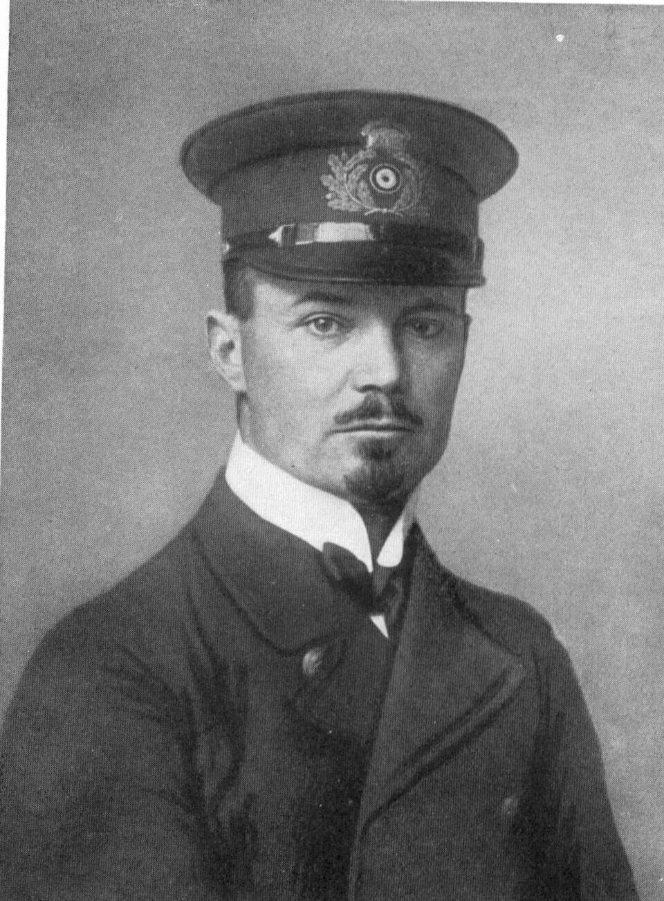
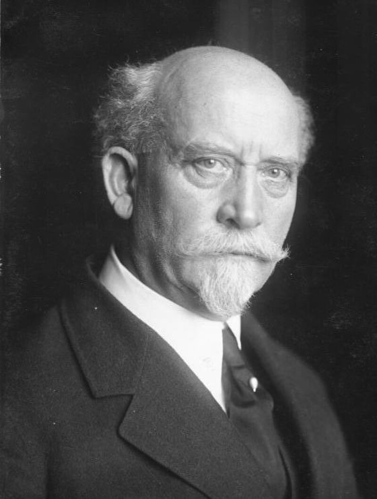

Geschichte im Spiegel der zeitgenössischen Berichterstattung — Täglich neu erzählt
Die historische Presseschau
Funkstille seit Donnerstagmorgen — Schwere Stürme über Alaska gemeldet — Befürchtungen um eine Vereisung des Luftschiffes wachsen
Drohender kommunistischer Umsturz in Kanton — Blutige Studentenunruhen — Kuomintang-Führer verlassen die Stadt

Beschwerde beim Staatsgerichtshof eingereicht — Vermögensbeschlagnahme in Preußen — Haussuchung bei Generaldirektor Vögler

Zehntausende Republikaner versammelt — Scharfe Abrechnung mit dem Kabinett Luther — Warnung vor einer Militärdiktatur
Beratungen über die Kalifatsfrage eröffnet — Die Nachwirkungen der türkischen Republik — Ägypten positioniert sich als neues geistiges Zentrum
Justizminister Laval ordnet teilweise Schließung an — Ankunft im Frauenquartier — Strenge Bewachung durch Ordensschwestern
Kampf gegen die Misswirtschaft in Staatsbetrieben — Bucharin fordert sozialistische Akkumulation — Rote Direktoren tagen in Moskau